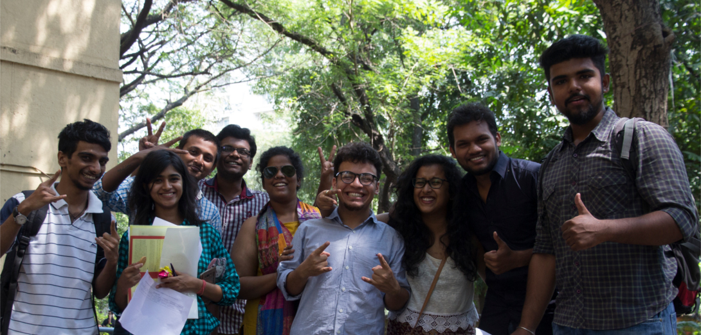

We believe that everyone from anywhere at anytime should have access to quality education.
TISS has taken up the challenge to demonstrate models on skilling people with varying educational qualifications (including illiterates whose skills have been rendered redundant in the new economic context). The Institute believes that the current framework that differentiates education (offered by schools and universities) and vocational skills (offered outside the school and University system) is not serving a large majority of the people, and those receive education from the formal system are not skilled enough to gain productive employment. The Institute has taken up this challenge to demonstrate models that focus on skilling people with varying educational qualifications (including illiterates-they are not without skills, but their skills have been rendered redundant in the new economic context).
To address this, the National University Students’ Skill Development Programme (NUSSD) was initiated as a pilot project in 2013 and is currently being tested in 11Universities across 9 states. It aims at increasing the employability of University students by imparting knowledge and skills, through cutting edge teaching and learning methods as well as practical work experience through internships and community projects. In addition, the programme, through its community development component, focuses on inculcating students with values of civic responsibility and teaching them to work together effectively in complex environments to find practical solutions to some of India’s most pressing social issues.
These universities cater to the rural youth and this initiative will bring about a change for the better in their lives by making them employable. Graduating students will not only have a degree in their chosen stream, but will acquire a diploma in a job-oriented discipline. For example, a B.A. History student could potentially also acquire a Diploma in Tourism. All students enrolled for NUSSD gain competency in motivation, digital literacy, English communication, legal literacy, youth leadership and peoples’ skill, financial literacy, introduction to entrepreneurship and working with communities.
To our students we offer some great facilities like medical services, a counselling centre, a dining hall, hostels and a gymkhana.
Director
+91-22-25525202
director[at]tiss[dot]edu
Deputy Director
Dean, Academics
+91 22 2552 5477
shajahan@tiss.edu
Dean, Students' Affairs and Placements
+91 22 25525465
jashabanu@tiss.edu
Assistant Professor
+91 9313309555
tarique@tiss.edu